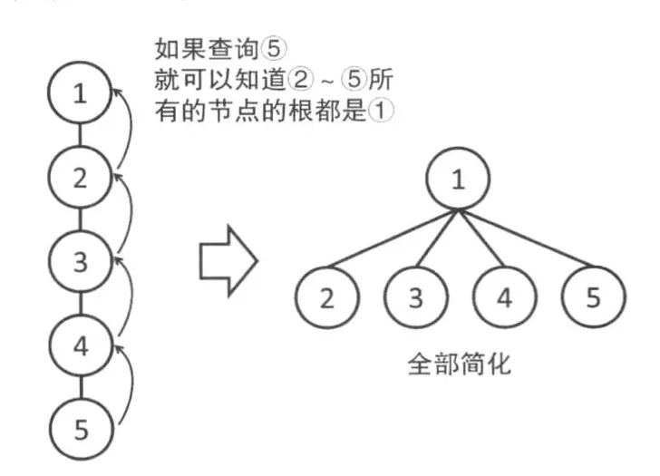

\(\Huge\text{并查集学习笔记}\)
并查集是一种用于查询两个元素是否在统一集合内或者合并两个集合的数据结构，十分重要！！
并查集，在一些有N个元素的集合应用问题中，我们通常是在开始时让每个元素构成一个单元素的集合，然后按一定顺序将属于同一组的元素所在的集合合并，其间要反复查找一个元素在哪个集合中。这一类问题近几年来反复出现在信息学的国际国内赛题中，其特点是看似并不复杂，但数据量极大，若用正常的数据结构来描述的话，往往在空间上过大，计算机无法承受；即使在空间上勉强通过，运行的时间复杂度也极高，根本就不可能在比赛规定的运行时间（1～3秒）内计算出试题需要的结果，只能用并查集来描述。
并查集是一种树型的数据结构，用于处理一些不相交集合（Disjoint Sets）的合并及查询问题。常常在使用中以森林来表示。（摘自百度百科）
并查集需要支持两种操作
先来看一下图：
1.查询\(\text{find(x)}\)（查询\(x\)所在集合的代表元素）
直接看图
下面是查询的代码
int find (int x){
return fa[x]==x?x:find(fa[x]);
}\(fa\)数组用于存储\(x\)元素所在集合的代表元素。在一开始每个元素的都是单独的所以\(\text{fa[x]=x}\)
2合并\(\text{Union(x,y)}\)（将\(x\)所在的集合与\(y\)所在的集合）
直接看图
下面是合并的代码
void Union(int x,int y){
fa[find(x)]=find(y);
return;
}将\(x\)所在集合的代表元素更改为\(y\)所在集合的代表元素
以上就是并查集的两种基本操作。
并查集的两种优化方式：
1.路径压缩
并查集合并完之后形成了一棵树，如下图
这种方法在查询时可能会被卡死，如下图左边（树变成了一条链！！！）

被卡成一条链之后，\(find\)操作会变得非常慢，路径压缩就解决了这种情况优化成了上图右边的样子
做法就是直接把元素连向该集合的代表元素而不是链接别的元素别的元素再去链接代表元素。
下面是路径压缩的代码
int find(int x){
return fa[x]==x?x:fa[x]=find(fa[x]);
}\(\large\text{注意有时候不能使用路径压缩如P2661信息传递}\)
2.按秩合并
按秩合并就是将高度（或大小）晓得一棵树连到高度深的一棵树下面如下图
下面是按秩合并（高度）的代码
void Union(int x,int y){
int rootx=find(x),rooty=find(y);
if(rootx==rooty) return;
if(r[rootx]<r[rooty]) fa[rootx]=rooty;
else if(r[rootx]>r[rooty]) fa[rooty]=rootx;
else{
fa[rootx]=rooty;
r[rooty]++;
}
}下面是按秩合并（大小）的代码
void Union(int x,int y){
int rootx=find(x),rooty=find(y);
if(rootx==rooty) return;
if(size[rootx]>size[rooty]){
fa[rooty]=rootx;
size[rootx]+=size[rooty];
}else{
fa[rootx]=rooty;
size[rooty]+=size[rootx];
}
}\(r\)数组用于记录树的高度，\(size\)数组用于记录树的大小。
基本的并查集就是以上说的那些，本博客的图片来源于简书